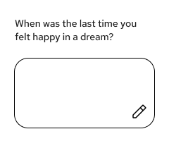
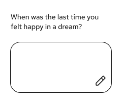

Behavioural Design
This section demonstrates how interactive components support usability and accessibility. Through thoughtful navigation patterns, clear iconography, and intuitive interfaces, we ensure mental health resources remain accessible and easy to use for all visitors.
Icon Set
Icons enhance comprehension throughout the interface, appearing in buttons, navigation, and information displays. Each icon maintains consistent sizing, stroke weight, and visual style to create a cohesive system.
Core Icon Collection
Icon Design Specifications
- Base size: 48×48px with 2px stroke weight for optimal clarity
- Uniform visual style: Outline icons with rounded corners
- Interactive icons feature hover states
- All icons meet WCAG accessibility standards through semantic labeling and sufficient color contrast
Card Components
Card components organize and present information in digestible, scannable formats. Each card type serves a specific purpose—from displaying community discussions to showcasing resources and collecting user feedback.
 

Search Component
The search component provides intuitive input with clear visual hierarchy and immediate feedback:
Card Design System
- Consistent corner radius: 12px across all card types
- Shadow specifications: 0 4px 16px rgba(0,0,0,0.08)
- Padding standards: 24px internal padding for content cards
- Responsive behavior: Cards adapt to container width
Form Components
Forms enable meaningful interaction between users and the platform. Each form element is designed with clear labeling, immediate validation feedback, and accessible error handling to support confident data entry and submission.
Community Member Form
This form demonstrates our approach to collecting user information with built-in validation and API integration.
Form Design Principles
- Clear Labels: Every input has a descriptive label using proper
forandidassociation for accessibility - Visual Hierarchy: Required fields marked with asterisk (*), consistent spacing guides the eye
- Built-in Validation: HTML5 attributes (
required,type="email") provide immediate browser feedback - Focus States: Blue outline and shadow on focus provides clear indication of active field
- Feedback Messages: Color-coded success/error messages with
aria-livefor screen reader announcements - API Integration: Form submits to real endpoint, demonstrating production-ready functionality